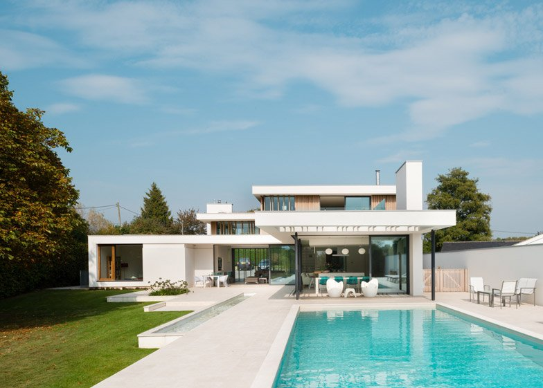
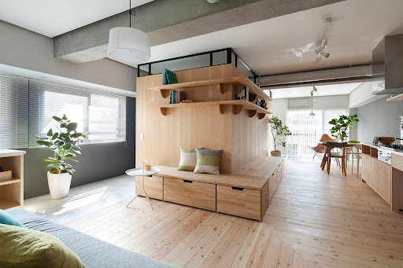
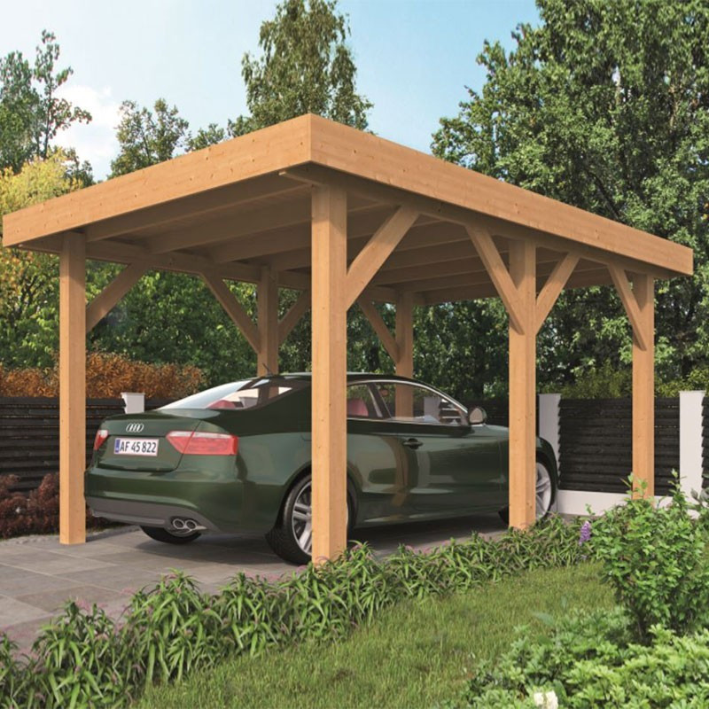

Exclusive mansion in Oslo This project was a new house in Oslo. I created a universaly designed house and had it built for the customer. This high end project cost approxematly 10 million and was completed over a timeframe of two years. This project included a huge pool, 10 bedrooms and grass lawn in the garden.
Modern apartment look - renovation in Trondheim. Snow studio architects under Jennifer Snow’s command carried out the renovation of an apartment of 64 square meters (690 square feet) in the 26-year-old residential complex in Trondheim, Norway. Designers decided to arrange the space in such a way so that different zones smoothly flow one into another creating a single living area instead of a single block where the main living functions would be concentrated. In their opinion, this approach will provide the residents with maximum of freedom in the limited space. So, the main part of the apartment is an open L-shaped area with two south-western windows which fill with light and fresh air the entire house.
This simpe, but estetically pleasing carport was built over a weekend. Solid 4x4 wooden beams create a beautiful structure under which any car may be parked. The carport may also be expanded to fit two vehicles, or any single large vehichle such as a motor home. My customer was looking for a reasonably priced structure considering the soaring cost of lumber, so incorporated in this design is a minimum use of material (ie. no walls) yet still conforming to strict building code.
